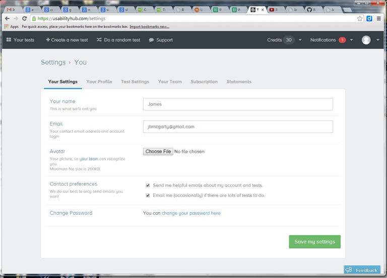
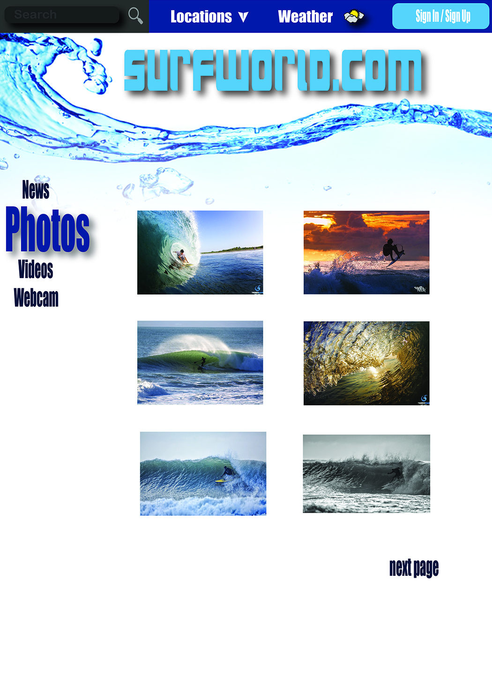
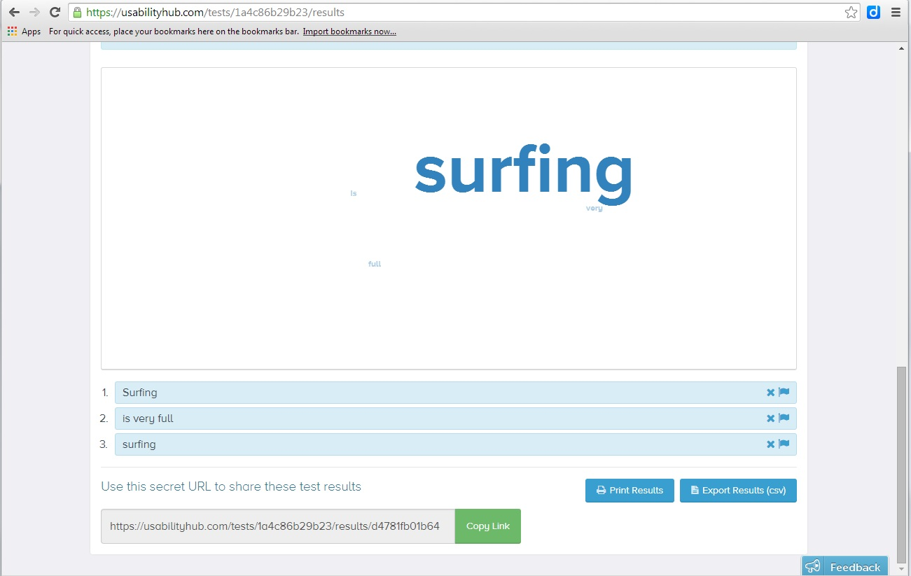

Forms are everywhere on the web. They are used to sign-up, login, submit information or perform any e-commerce based transaction. They are by far one of the single most important aspects of the web today. Whether it is peer-to-peer (P2P), business-to-business (B2B) or business-to-consumer (B2C), forms alone support most of our online communications. Businesses rely very heavily on the power of forms to collect user-supplied information for strategic marketing campaigns and improved convergence metrics. Because of this it is our job as visual interface designers to make forms as easy and intuitive as possible to complete, while avoiding user abandonments. In other words, designing a form that is easy to use is a crucial part step to creating a satisfying user experience.
This is where my pages test links will go.


This is where the test results will go.
